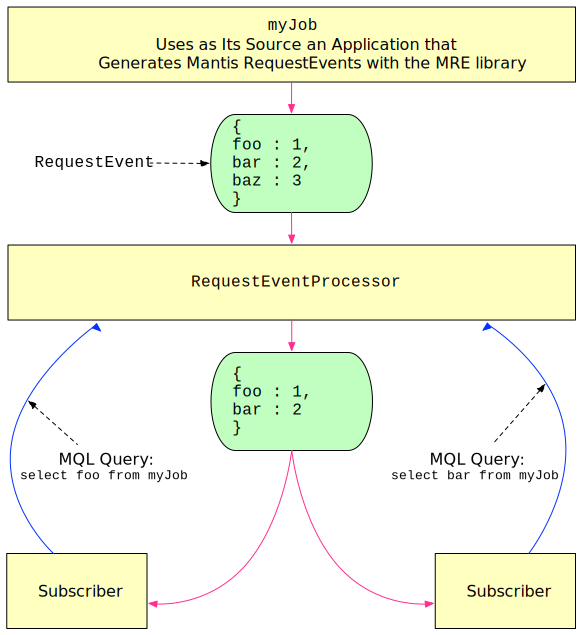

Mantis Source Jobs
Mantis Source Jobs are Mantis Jobs that fetch data from external sources. There are four types of Source Jobs:
-
Mantis Publish Source Jobs read from their sources by using Mantis Publish. As such, they do not apply MQL on events themselves. Instead, they propagate the MQL queries upstream to Mantis Publish running on the external source, which then applies the MQL queries to the events it produces and only then pushes those events downstream to the Request Source Job.
-
Kafka Source Jobs consume events from Kafka and apply MQL to each incoming event.
Composition of a Source Job¶
A Source Job is composed of three components:
- the default Source
- custom Processing Stages including a tagging operator
- the default Sink consisting of an SSE operator
For example, here is how you might declare a Kafka Source Job:
MantisJob .source(KafkaSource) .stage( getAckableTaggingStage(), CustomizedAutoAckTaggingStage.config()) .sink(new TaggedDataSourceSink( new QueryRequestPreProcessor(), new QueryRequestPostProcessor())) .lifecycle(...) .create();
Source (RxFunction)¶
The Source in this example contains code that creates and manages connections to Kafka using the
0.10 high level consumer. It creates an Observable with backpressure semantics by leveraging the
SyncOnSubscribe class.
Processing Stage (RxFunction)¶
The next stage in this Job is the Processing Stage which enriches events with metadata. This stage transforms events in the following way:
- Applies a user-defined pre-mapping function.
- This is a Groovy function that takes a
Map<String, Object>and returns aMap<String, Object>referenced by a variable namede.
- This is a Groovy function that takes a
- Filters out empty events.
- Inspects its internal subscription registry and enriches each event with all matching
subscriptions.
- Subscriptions are represented by an MQL query and are registered when a consumer (e.g. Mantis Job) subscribes to the Source Job.
-
Each event is enriched with fields specified by the projections of a subscription’s MQL query, as in the following illustration:

Sink (RxAction)¶
In order for a consumer to consume events from a Source Job, the consumer connects to the Job’s Sink.
Consumers subscribe to a Source Job by sending a subscription request over HTTP to the Source Job’s Sink.
When a consumer connects to a Sink, the consumer must provide three query parameters:
criterion— An MQL query stringclientId— This is automatically generated if you use the Mantis client library; it defaults to the Mantis Job IDsubscriptionId— This is used as a load-balancing mechanism forclientId
A consumer (represented as a client through clientId) may have many consumer instances
(represented as susbcriptions through subscriptionId). Source Jobs use clientId and
subscriptionId to broadcast and/or load balance events to consumers.
Source Jobs will broadcast an event to all clientIds. This means that consumer instances with
different clientIds will each receive the same event.
However, Source Jobs will load balance an event within a clientId. This means that consumer
instances with the same clientId but different subscriptionIds are effectively grouped together.
Events with the same clientId are load balanced among its subscriptionIds.
curl "http://instance-address:port?clientId=myId&subscriptionId=mySubscription&criterion=select%20*%20where%20true"
data: {"x": 60.000000, "y": -3.048106}
data: {"x": 100.000000, "y": -5.063656}
data: {"x": 26.000000, "y": 7.625585}
⋮
Sinks have a pre-processor (QueryRequestPreProcessor), a post-processor
(QueryRequestPostProcessor), and a router:
-
The pre-processor is an RxFunction that registers the consumer’s query, with their
clientIdandsubscriptionId, into an in-memory cache called aQueryRefCountMapwhen a consumer instance connects to the Sink. This registers queries so that the Source Job can apply them to events as those events are ingested by the Source Job. -
The post-processor is an RxFunction that de-registers subscriptions from the
QueryRefCountMapwhen a consumer instance disconnects from the Sink. The Source Job removes removes theclientIdentirely from theQueryRefCountMaponly when all of itssubscriptionIds have been removed. -
The router routes incoming events for a
clientIds to its subscriptions. It does this by using a drainer called aChunkProcessorto drain events from an internal queue on an interval and randomly distribute the events to subscriptions.
Note
Typically, subscriptions to a Source Job come from other Mantis Jobs. However, because subscriptions are SSE endpoints, you can subscribe to Source Jobs over that same SSE endpoint to view the Job’s output for debugging purposes.
Caveats¶
Source Jobs are single-stage Mantis Jobs that perform projection and filtering operations. MQL
queries containing groupBy, orderBy, and window are ignored. These clauses are interpreted
into RxJava operations and run by downstream Mantis Jobs.
Mantis Publish-based Source Jobs do not autoscale. Autoscaling Mantis Publish-based Source Jobs requires future work to reshuffle connections among all Source Job instances and their upstream Mantis Publish connections.